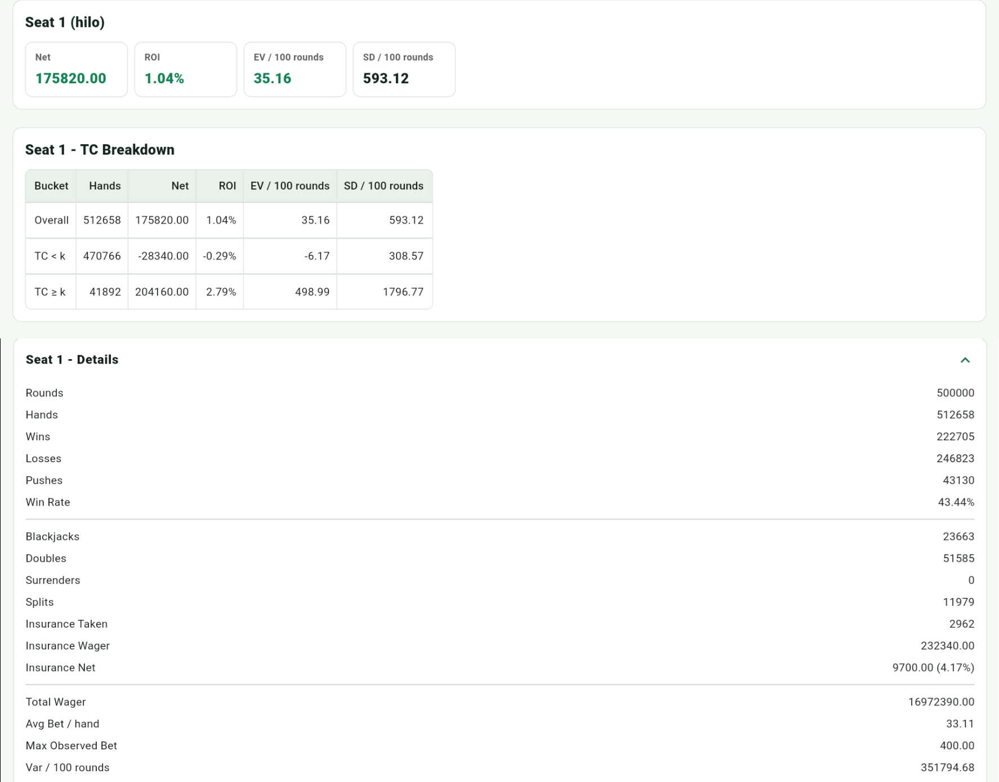
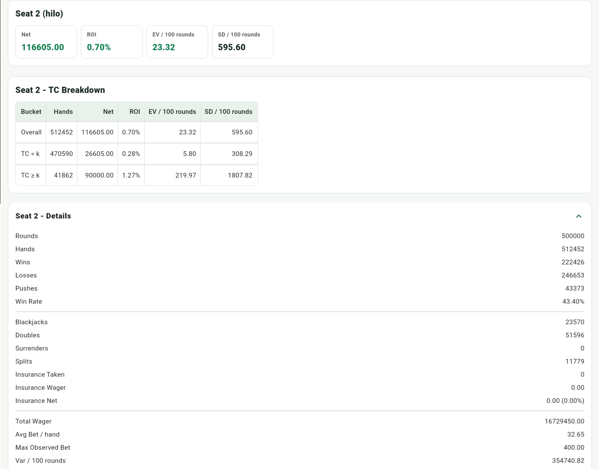

ディビエーション
Deviations は TC が特定のしきい値に達したとき、基本戦略から別のアクションに変えるものです。Illustrious 18 は Hi-Lo で特に価値の高い index play です。
実装上の前提
アプリでは画面に表示される TC を基準にします。TC が表のしきい値に達した場合だけ deviation を使い、それ以外は基本戦略に戻ります。
Illustrious 18
| 状況 | しきい値 | Deviation |
|---|---|---|
| インシュランス | TC >= +3 | インシュランスを買う |
| 16 vs 10 | TC >= 0 | サレンダーしない場合は Stand |
| 15 vs 10 | TC >= +4 | サレンダーしない場合は Stand |
| 10 vs 10 | TC >= +4 | Double |
| 16 vs 9 | TC >= +5 | Stand |
| 13 vs 2 | TC >= -1 | Stand |
| 13 vs 3 | TC >= -2 | Stand |
| 12 vs 2 | TC >= +3 | Stand |
| 12 vs 3 | TC >= +2 | Stand |
| 11 vs A | TC >= +1 | Double |
| 10 vs A | TC >= +4 | Double |
| 9 vs 2 | TC >= +1 | Double |
| 9 vs 7 | TC >= +3 | Double |
| 10,10 vs 5 | TC >= +5 | Split |
| 10,10 vs 6 | TC >= +4 | Split |
| 12 vs 4 | TC < 0 | Hit |
| 12 vs 5 | TC < -2 | Hit |
| 12 vs 6 | TC < -1 | Hit |
Fab 4
Fab 4 は Hi-Lo における重要な late surrender index play の 4 つです。
| 状況 | しきい値 | Deviation |
|---|---|---|
| 15 vs 10 | 基本戦略 R | サレンダー |
| 15 vs A | H17 +1 / S17 +2 | サレンダー |
| 15 vs 9 | TC >= +2 | サレンダー |
| 14 vs 10 | TC >= +3 | サレンダー |
Insurance の EV と変動
Insurance は本質的に、ディーラーのホールカードが 10 点カードかどうかに賭けるものです。配当が 2:1 なので、残りのシューにある 10 点カードの割合が損益分岐点を超えるときだけ取る価値があります。これが Hi-Lo で TC >= +3 が insurance の基準としてよく使われる理由です。
長期的には、正しく insurance を取る主な価値は EV を上げることです。高 TC では、このサイドベットが通常の負の期待値から、プレイヤーに有利な正の期待値に変わる可能性があります。
Insurance は変動にも影響します。ディーラーが blackjack のときにメインベットの損失を相殺でき、特に高 TC では大きなベットになりやすいため、結果分布をより滑らかにし、大きなベットがディーラー blackjack に当たる下振れを抑える可能性があります。ただし insurance 自体も追加のサイドベットです。より正確には、正しい insurance の主目的は EV を上げることであり、同時に一部の高リスク状況の変動を滑らかにする可能性がある、という理解になります。すべての統計的な見方で variance が必ず下がるという意味ではありません。
下のシミュレーションは Hi-Lo と Bet Ramp 4/8/12/16/20 を使い、500000 回実行したものです。Threshold の TC >= k は k = 3 に設定し、TC >= 3 の区間を確認しています。


上の図を見ると、insurance ありの Seat 1 は純利益がプラスです。このシミュレーションでは、insurance の ROI は 4.17% です。Seat 2 と比べると、Seat 1 は EV / 100 が高く（35.16 vs. 23.32）、SD / 100 もやや小さくなっています（593.12 vs. 595.6）が、SD の差は大きくありません。この結果は前述の考え方と一致します。正しい insurance は主に EV を高め、同時に高 TC・大きなベットでディーラー blackjack に当たる場面の変動を少し滑らかにする可能性があります。